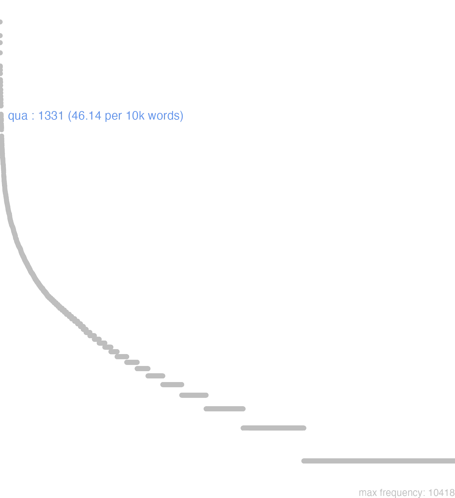

136 qua
136.0.0.1 bases lexicais
id: http://lila-erc.eu/data/id/hypolemma/110471
classe: advérbio
paradigma: indeclinável
outras grafias: quam, quamque, quaque, qui, quique, quo
variantes do lema:
no data
quā
quō
quī
no data
136.0.0.2 dicionários tradicionais
1 quam
adv.
adv. indica movimento
adv. abl. f. de qui
conj. abl. de qui empregado como conj.
Obs.: Quo é muito frequente diante de comparações: a negação que a acompanha é ne Cíc. Fam. 7, 2, 1.
adv.
1 Quão, quão grande, quanto, a que ponto C íc. Br. 265; Cíc. Cael. 64.
2 Quão pouco sent. raro Cíc. De Or. 2, 180; Cíc. SuB. 33.
3 Quanto possível com superl.: quam maxime Cíc. Inv. 2, 20.
adv. indica movimento
1 I-Interr.: Para onde? para que lugar? Cíc. Verr. 5. 126; Cíc. Ac. 2, 93.
2 I-Interr.: Para que = ad quam rem:
3 II-Indef.: Para algum lugar, para alguma parte Cíc. Verr. 5, 45.
[EXEMPLOS]
2
quo tantum pecuniam Cíc. Verr. 2. 137 “para que tanto dinheiro?”.
adv. abl. f. de qui
1 I-Sent. próprio Por onde, pelo lugar em que Cíc. Verr. 5, 66.
2 I-Sent. próprio Do lado que T. Lív. 39, 48, 6.
3 I-Sent. próprio Pelo meio que Verg. En. 11, 293.
4 II-Interrogativo: Interr. direta: por que meio? como? Cíc. At. 8, 16, 1.
5 II-Interrogativo: Interr. indireta: por onde Cíc. AI. 9, I. 2.
6 III-Indefinido: Por qualquer meio Cíc. Verr. 4, 29.
7 III-Indefinido: qua… qua: por um lado… por outro lado: tanto… quanto Cíc. At. 2, 19, 3.
conj. abl. de qui empregado como conj.
Obs.: Quo é muito frequente diante de comparações: a negação que a acompanha é ne Cíc. Fam. 7, 2, 1.
1 Pelo que, é por isso que, porque Cíc. Lae. 86; Cíc. Fin. 3, 4.
2 Correlativo de eo, hoc: por isso, pelo fato de que, para que final Hor. Sát. 2, 1, 37; Cíc. Quinct. 5; Cíc. Fin. 3, 43;
3 Para que, a fim de que Cíc. Of. 3, 33; Cíc. Verr. 4, 26; Cíc. Clú. 9. 140.
[EXEMPLOS]
2
quo… eo Cíc. Amer. 121 ‘quanto mais … tanto mais?’.
no data
Qua
ablat.
adv.
adv.
ablat.
1 sc. ratione, via, regione, parte Cic. por que parte? de que modo? de que sorte? pela parte que.
[EXEMPLOS]
X
qua paterna gloria, qua sua insignis Liv Illustre tanto pela gloria dos seus maiores, como pela sua propria
adv.
1 * Cic. por qualquer parte.
Quoadv.
1 Cic. para onde.
2 quanto.
3 porque, para que.
4 Nep. pelo que, por cuja causa.
5 Ovid. do modo que, como.
[EXEMPLOS]
X
quo gentium fugiam? Plaut Para que parte do mundo fugirei?
Quà
Adverb.
Adverb.
Adverb.
Adverb.
1 por onde
2 repetitum significat Tum, vel Partim
[EXEMPLOS]
2
insignis qua paterna gloria, qua sua insigne assim na gloria paterna, como na sua
Adverb.
1 quam, quanto, muito
QuiAdverb.
1 pro Quomodo
Quò1 quanto, para onde, para que?
Qua
aduer.
aduer. Quo
aduerb.
aduer.
1 por õde
Quaaduer. Quo
aduerb.
1 pera onde
136.0.0.3 dados de corpus
![This chart plots collocate by scoreSUBST, for the headword qua here are all the values plotted: collocate: magis; scoreSUBST: 0. collocate: multus; scoreSUBST: 0. collocate: potius; scoreSUBST: 0. collocate: malo; scoreSUBST: 0. collocate: uideo; scoreSUBST: 0. collocate: sum; scoreSUBST: 0. collocate: parum; scoreSUBST: 0. collocate: ut; scoreSUBST: 0. collocate: uolo; scoreSUBST: 0. collocate: ipse; scoreSUBST: 0. collocate: aliter; scoreSUBST: 0. collocate: bonus; scoreSUBST: 0. collocate: scio; scoreSUBST: 0. collocate: paruus; scoreSUBST: 0. collocate: intellego; scoreSUBST: 0. collocate: primum; scoreSUBST: 0. collocate: saepe; scoreSUBST: 0. collocate: debeo; scoreSUBST: 0. collocate: amplus; scoreSUBST: 0. collocate: turpis; scoreSUBST: 0. collocate: longe; scoreSUBST: 0. collocate: quisquam; scoreSUBST: 0. collocate: uere; scoreSUBST: 0. collocate: dulcis; scoreSUBST: 0. collocate: nascor; scoreSUBST: 0. collocate: bene; scoreSUBST: 0. collocate: stultus; scoreSUBST: 0. collocate: diligenter; scoreSUBST: 0. collocate: prosum; scoreSUBST: 0. collocate: dignus; scoreSUBST: 0. collocate: excedo; scoreSUBST: 0. collocate: late; scoreSUBST: 0. collocate: appeto; scoreSUBST: 0. collocate: olim; scoreSUBST: 0. collocate: cito; scoreSUBST: 0. collocate: popularis; scoreSUBST: 0. collocate: fruor; scoreSUBST: 0. collocate: acer; scoreSUBST: 0. collocate: difficilis; scoreSUBST: 0. collocate: miror; scoreSUBST: 0. collocate: morior; scoreSUBST: 0. collocate: uerus; scoreSUBST: 0](./Media/wordcloud__xx113-117-97xx__BY_collocate_scoreSUBST.webp)
![This chart plots collocate by scoreADJ, for the headword qua here are all the values plotted: collocate: magis; scoreADJ: 0. collocate: multus; scoreADJ: 0. collocate: potius; scoreADJ: 0. collocate: malo; scoreADJ: 0. collocate: uideo; scoreADJ: 0. collocate: sum; scoreADJ: 0. collocate: parum; scoreADJ: 0. collocate: ut; scoreADJ: 0. collocate: uolo; scoreADJ: 0. collocate: ipse; scoreADJ: 0. collocate: aliter; scoreADJ: 0. collocate: bonus; scoreADJ: 2. collocate: scio; scoreADJ: 0. collocate: paruus; scoreADJ: 2. collocate: intellego; scoreADJ: 0. collocate: primum; scoreADJ: 0. collocate: saepe; scoreADJ: 0. collocate: debeo; scoreADJ: 0. collocate: amplus; scoreADJ: 2. collocate: turpis; scoreADJ: 2. collocate: longe; scoreADJ: 0. collocate: quisquam; scoreADJ: 0. collocate: uere; scoreADJ: 0. collocate: dulcis; scoreADJ: 2. collocate: nascor; scoreADJ: 0. collocate: bene; scoreADJ: 0. collocate: stultus; scoreADJ: 2. collocate: diligenter; scoreADJ: 0. collocate: prosum; scoreADJ: 0. collocate: dignus; scoreADJ: 2. collocate: excedo; scoreADJ: 0. collocate: late; scoreADJ: 0. collocate: appeto; scoreADJ: 0. collocate: olim; scoreADJ: 0. collocate: cito; scoreADJ: 0. collocate: popularis; scoreADJ: 2. collocate: fruor; scoreADJ: 0. collocate: acer; scoreADJ: 2. collocate: difficilis; scoreADJ: 1. collocate: miror; scoreADJ: 0. collocate: morior; scoreADJ: 0. collocate: uerus; scoreADJ: 1](./Media/wordcloud__xx113-117-97xx__BY_collocate_scoreADJ.webp)
![This chart plots collocate by scoreVERBO, for the headword qua here are all the values plotted: collocate: magis; scoreVERBO: 0. collocate: multus; scoreVERBO: 0. collocate: potius; scoreVERBO: 0. collocate: malo; scoreVERBO: 3. collocate: uideo; scoreVERBO: 2. collocate: sum; scoreVERBO: 2. collocate: parum; scoreVERBO: 0. collocate: ut; scoreVERBO: 0. collocate: uolo; scoreVERBO: 2. collocate: ipse; scoreVERBO: 0. collocate: aliter; scoreVERBO: 0. collocate: bonus; scoreVERBO: 0. collocate: scio; scoreVERBO: 2. collocate: paruus; scoreVERBO: 0. collocate: intellego; scoreVERBO: 2. collocate: primum; scoreVERBO: 0. collocate: saepe; scoreVERBO: 0. collocate: debeo; scoreVERBO: 1. collocate: amplus; scoreVERBO: 0. collocate: turpis; scoreVERBO: 0. collocate: longe; scoreVERBO: 0. collocate: quisquam; scoreVERBO: 0. collocate: uere; scoreVERBO: 0. collocate: dulcis; scoreVERBO: 0. collocate: nascor; scoreVERBO: 2. collocate: bene; scoreVERBO: 0. collocate: stultus; scoreVERBO: 0. collocate: diligenter; scoreVERBO: 0. collocate: prosum; scoreVERBO: 2. collocate: dignus; scoreVERBO: 0. collocate: excedo; scoreVERBO: 2. collocate: late; scoreVERBO: 0. collocate: appeto; scoreVERBO: 2. collocate: olim; scoreVERBO: 0. collocate: cito; scoreVERBO: 0. collocate: popularis; scoreVERBO: 0. collocate: fruor; scoreVERBO: 2. collocate: acer; scoreVERBO: 0. collocate: difficilis; scoreVERBO: 0. collocate: miror; scoreVERBO: 1. collocate: morior; scoreVERBO: 1. collocate: uerus; scoreVERBO: 0](./Media/wordcloud__xx113-117-97xx__BY_collocate_scoreVERBO.webp)
![This chart plots collocate by scoreADV, for the headword qua here are all the values plotted: collocate: magis; scoreADV: 4. collocate: multus; scoreADV: 0. collocate: potius; scoreADV: 4. collocate: malo; scoreADV: 0. collocate: uideo; scoreADV: 0. collocate: sum; scoreADV: 0. collocate: parum; scoreADV: 2. collocate: ut; scoreADV: 0. collocate: uolo; scoreADV: 0. collocate: ipse; scoreADV: 0. collocate: aliter; scoreADV: 3. collocate: bonus; scoreADV: 0. collocate: scio; scoreADV: 0. collocate: paruus; scoreADV: 0. collocate: intellego; scoreADV: 0. collocate: primum; scoreADV: 2. collocate: saepe; scoreADV: 2. collocate: debeo; scoreADV: 0. collocate: amplus; scoreADV: 0. collocate: turpis; scoreADV: 0. collocate: longe; scoreADV: 2. collocate: quisquam; scoreADV: 0. collocate: uere; scoreADV: 2. collocate: dulcis; scoreADV: 0. collocate: nascor; scoreADV: 0. collocate: bene; scoreADV: 1. collocate: stultus; scoreADV: 0. collocate: diligenter; scoreADV: 2. collocate: prosum; scoreADV: 0. collocate: dignus; scoreADV: 0. collocate: excedo; scoreADV: 0. collocate: late; scoreADV: 2. collocate: appeto; scoreADV: 0. collocate: olim; scoreADV: 2. collocate: cito; scoreADV: 2. collocate: popularis; scoreADV: 0. collocate: fruor; scoreADV: 0. collocate: acer; scoreADV: 0. collocate: difficilis; scoreADV: 0. collocate: miror; scoreADV: 0. collocate: morior; scoreADV: 0. collocate: uerus; scoreADV: 0](./Media/wordcloud__xx113-117-97xx__BY_collocate_scoreADV.webp)
![This chart plots collocate by scoreFUNC, for the headword qua here are all the values plotted: collocate: magis; scoreFUNC: 0. collocate: multus; scoreFUNC: 0. collocate: potius; scoreFUNC: 0. collocate: malo; scoreFUNC: 0. collocate: uideo; scoreFUNC: 0. collocate: sum; scoreFUNC: 0. collocate: parum; scoreFUNC: 0. collocate: ut; scoreFUNC: 20. collocate: uolo; scoreFUNC: 0. collocate: ipse; scoreFUNC: 0. collocate: aliter; scoreFUNC: 0. collocate: bonus; scoreFUNC: 0. collocate: scio; scoreFUNC: 0. collocate: paruus; scoreFUNC: 0. collocate: intellego; scoreFUNC: 0. collocate: primum; scoreFUNC: 0. collocate: saepe; scoreFUNC: 0. collocate: debeo; scoreFUNC: 0. collocate: amplus; scoreFUNC: 0. collocate: turpis; scoreFUNC: 0. collocate: longe; scoreFUNC: 0. collocate: quisquam; scoreFUNC: 0. collocate: uere; scoreFUNC: 0. collocate: dulcis; scoreFUNC: 0. collocate: nascor; scoreFUNC: 0. collocate: bene; scoreFUNC: 0. collocate: stultus; scoreFUNC: 0. collocate: diligenter; scoreFUNC: 0. collocate: prosum; scoreFUNC: 0. collocate: dignus; scoreFUNC: 0. collocate: excedo; scoreFUNC: 0. collocate: late; scoreFUNC: 0. collocate: appeto; scoreFUNC: 0. collocate: olim; scoreFUNC: 0. collocate: cito; scoreFUNC: 0. collocate: popularis; scoreFUNC: 0. collocate: fruor; scoreFUNC: 0. collocate: acer; scoreFUNC: 0. collocate: difficilis; scoreFUNC: 0. collocate: miror; scoreFUNC: 0. collocate: morior; scoreFUNC: 0. collocate: uerus; scoreFUNC: 0](./Media/wordcloud__xx113-117-97xx__BY_collocate_scoreFUNC.webp)
![This charts plots the frequency of lemma by author_Frequencies. The Seneca subcorpus registers the highest normalized frequency, with the value of 58.23 and an absolute frequency of 312. The Seneca subcorpus follows, with a normalized frequency of 58.23 and an absolute frequency of 312. the subcorpus with the least normalized frequency is Hieronymus with the normalized value of 0 and an absolute freqeuncy of 0. here are all the values: subcorpus: Caesar ; normalized frequency: 69 ; absolute frequency: 26.0593700430546. subcorpus: Cicero ; normalized frequency: 816 ; absolute frequency: 50.8335202212753. subcorpus: Horatius ; normalized frequency: 28 ; absolute frequency: 24.8645768581831. subcorpus: Ovidius ; normalized frequency: 9 ; absolute frequency: 15.442690459849. subcorpus: Phaedrus ; normalized frequency: 18 ; absolute frequency: 27.3265522999848. subcorpus: Sallustius ; normalized frequency: 56 ; absolute frequency: 51.9432334662833. subcorpus: Seneca ; normalized frequency: 312 ; absolute frequency: 58.2295963121256. subcorpus: Suetonius ; normalized frequency: 5 ; absolute frequency: 55.1267916207277. subcorpus: Tacitus ; normalized frequency: 14 ; absolute frequency: 48.0604188122211. subcorpus: Vergilius ; normalized frequency: 4 ; absolute frequency: 7.72200772200772. subcorpus: Hieronymus ; normalized frequency: 0 ; absolute frequency: 0](./Media/barchart__xx113-117-97xx__lemma_BY_author_Frequencies.webp)
![This charts plots the frequency of lemma by genre_Frequencies. The Prosa.filosófica subcorpus registers the highest normalized frequency, with the value of 67.21 and an absolute frequency of 408. The Prosa.oratória subcorpus follows, with a normalized frequency of 43.3 and an absolute frequency of 451. the subcorpus with the least normalized frequency is Prosa.ficcional with the normalized value of 0 and an absolute freqeuncy of 0. here are all the values: subcorpus: Prosa.histórica ; normalized frequency: 144 ; absolute frequency: 35.0544073614255. subcorpus: Prosa.filosófica ; normalized frequency: 408 ; absolute frequency: 67.2147081596679. subcorpus: Prosa.oratória ; normalized frequency: 451 ; absolute frequency: 43.3016811805709. subcorpus: Prosa.epistolográfica ; normalized frequency: 250 ; absolute frequency: 66.244468586873. subcorpus: Poesia.lírica ; normalized frequency: 31 ; absolute frequency: 26.0789097333221. subcorpus: Poesia.didática ; normalized frequency: 24 ; absolute frequency: 20.3579608109254. subcorpus: Poesia.trágica ; normalized frequency: 19 ; absolute frequency: 16.5045170257123. subcorpus: Poesia.épica ; normalized frequency: 4 ; absolute frequency: 7.72200772200772. subcorpus: Prosa.ficcional ; normalized frequency: 0 ; absolute frequency: 0](./Media/barchart__xx113-117-97xx__lemma_BY_genre_Frequencies.webp)
![This charts plots the frequency of lemma by period_Frequencies. The I.d.C. subcorpus registers the highest normalized frequency, with the value of 51.4 and an absolute frequency of 336. The I.d.C. subcorpus follows, with a normalized frequency of 51.4 and an absolute frequency of 336. the subcorpus with the least normalized frequency is IV.d.C. with the normalized value of 0 and an absolute freqeuncy of 0. here are all the values: subcorpus: I.a.C. ; normalized frequency: 976 ; absolute frequency: 45.427042122411. subcorpus: I.d.C. ; normalized frequency: 336 ; absolute frequency: 51.3997246443323. subcorpus: II.d.C. ; normalized frequency: 19 ; absolute frequency: 49.738219895288. subcorpus: IV.d.C. ; normalized frequency: 0 ; absolute frequency: 0](./Media/barchart__xx113-117-97xx__lemma_BY_period_Frequencies.webp)
quam vellem Romae mansisses
Cic.Att.2.22.1
Como eu queria que estivesses em Roma! [JDD, de outra edição]
maluissem offerre quam tradere
Sen.Prov.5.6
Eu teria preferido oferecer do que entregar. [JDD]
uidetis quam nefaria uox
Cic.Amici.37
Vedes que palavras abomináveis! [JDD]
non magis quam in semine
Sen.Ep.124.10
Não mais do que em semente. [JDD]
plus accusatori dabatur quam postulabat
Cic.Att.1.16.4
ao acusador era concedido mais do que ele pedia. [JDD]
quid autem turpius quam illudi
Cic.Amici.99
Ora, o que é mais vergonhoso do que ser iludido? [JDD, de outra edição]
tu dignior Uerres quam Calidius
Cic.Ver.2.4.45.5
Tu, mais digno do que Calídio, Verres? [JDD]
falsum est peiores morimur quam nascimur
Sen.Ep.22.15
É falso: morremos piores do que nascemos. [JDD]
quam tenui aut nulla potius ualetudine
Cic.Sen.35
quão delicada, ou antes, nenhuma a sua saúde! [JDD]
scis quam multa mala blanda sint
Sen.Ep.118.8
Tu sabes quão numerosos males são sedutores. [JDD]
o quam miserum est nescire mori
Sen.Ag.611
Oh, quão infeliz é não saber morrer! [JDD]
res eodem est loci quo reliquisti
Cic.Att.1.13.5
A coisa está no mesmo ponto em que deixaste. [JDD]
quam bene parentis sceptra Polybi fugeram
Sen.Oed.12
Quão bom foi eu ter fugido do cetro de meu pai Políbio! [JDD]
in sua potestate habet quam cito reparet
Sen.Ep.9.5
tem em seu poder substituí-lo o mais rápidamente possível. [JDD]
quam dulce est cupiditates fatigasse ac reliquisse
Sen.Ep.12.5
Quão doce é ter esgotado e abandonado as paixões! [JDD]
quam dissimilis hic dies illi tempori uidebatur
Cic.Ver.2.4.77.11
Quão diferente lhes parecia este dia daquele momento! [JDD]
quam minimum sit in corpore tuo spoliorum
Sen.Ep.14.9
que haja em teu corpo o mínimo de despojos possível. [JDD]
mihi autem impudens magis quam stultus videbatur
Cic.Att.5.21.12
A mim, porém, ele parecia mais safado do que estulto. [JDD]
tu modo quam saepissime ad me aliquid
Cic.Att.4.6.4
Tu apenas me escreve alguma coisa o mais frequentemente possível. [JDD]
prodest autem etiam quo moratur ad praua properantes
Sen.Ep.124.21
Por outro lado é também útil para retardar os que correm para a depravação. [JDD]
quam vellem Romae esses si forte non es
Cic.Att.5.18.1
Como eu queria que estivesses em Roma, se acaso não estás! [JDD]
profecto hinc natum est malo emere quam rogare
Cic.Ver.2.4.12.12
Sem dúvida foi daqui que nasceu: “Prefiro comprar do que implorar.” [JDD]
populare nunc nihil tam est quam odium popularium
Cic.Att.2.20.4
Nada é agora tão popular como o ódio dos populares. [JDD]
quid est autem turpius quam senex uiuere incipiens
Sen.Ep.13.17
O que há, porém, de mais indecente do que um velho começando a viver? [JDD]
qua re cura ut te quam primum videamus
Cic.Att.1.18.8
Por isso cuida para que te vejamos o quanto antes. [JDD]
ne c quicquam aliud opus est quam abrogari
Cic.Att.3.15.5
E não é necessário que nenhuma outra seja revogada. [JDD, de outra edição]
video iam quo invidia transeat et ubi sit habitatura
Cic.Att.2.9.2
Já vejo para onde vai a inveja e onde vai se estabelecer. [JDD]
prouinciae praefuit non minore iustitia quam fortitudine ; praefuit
Suet.Aug.2.3.2
Governou a província com não menor justiça do que valor. [JDD]
multa quam superuacua essent non intelleximus nisi deesse coeperunt
Sen.Ep.123.6
Não entendemos quão supérfluas eram muitas coisas, a não ser quando começaram a faltar. [JDD]
incredibile est autem quam multa et quam praeclara fuerint
Cic.Ver.2.4.46.9
Além do mais, é incrível quão numerosos e quão magníficos eram. [JDD]
quam autem ciuitati carus fuerit maerore funeris iudicatum est
Cic.Amici.11
E o quão querido foi para a cidade se revelou na tristeza de seu funeral. [JDD, de outra edição]
uis scire quam non paeniteat hoc pretio aestimasse uirtutem
Sen.Prov.3.9
Queres saber como ele não se arrepende de ter avaliado a virtude com este preço? [JDD]
Ridicule magis hoc dictum quam vere aestimo ; dictum
Phaed.3.4
Avalio que esse dito é mais gracioso do que verdadeiro. [JDD]
si est enim aliquid plus est boni quam putaram
Cic.Att.2.7.4
Pois se há algo, está melhor do que eu pensava. [JDD, de outra edição]
nemo alius est deo dignus quam qui opes contempsit
Sen.Ep.18.13
Ninguém é mais digno de um deus do que quem desprezou as riquezas. [JDD]
qui domum intrauerit nos potius miretur quam supellectilem nostram
Sen.Ep.5.6
quem entrar em nossa casa admirará antes a nós do que os nossos utensilhos. [JDD]
non minus incerta in re publica quam in epistula tua
Cic.Att.2.15.1
que a situação não é menos incerta na república do em tua carta. [JDD]
sed haec est pridie data quam illa quo conturber magis
Cic.Att.3.8.2
Mas esta foi remetida um dia antes daquela, o que aumenta minha preocupação. [JDD, de outra edição]
quam multis istum putatis hominibus honestis de digitis anulos abstulisse
Cic.Ver.2.4.57.11
De quantos homens honrados julgais que esse sujeito tirou dos dedos os anéis? [JDD]
primum ista tam seni ante oculos debet esse quam iuueni
Sen.Ep.12.6
Primeiramente, ela deve estar tanto diante dos olhos do velho como do jovem [JDD]
num est num potest magis carere his omnibus quam caret
Cic.Lig.11
Por acaso está, por acaso pode ele carecer de todas estas coisas mais do que carece? [JDD]
quid est turpius quam in ipso limine securitatis esse sollicitum
Sen.Ep.22.16
O que é mais vergonhoso do que estar angustiado no próprio limiar da segurança? [JDD]
sed res est ut spero non tam exitu molesta quam aditu
Cic.Att.2.24.1
Mas é uma coisa, conforme espero, não tão desagradável na saída quanto foi na entrada. [JDD]
haec ut omittam quam graues quam difficiles plerisque uidentur calamitatum societates
Cic.Amici.64
E isso para não dizer quão pesada, quão difícil parece à maioria a parceria nas desgraças! [JDD]
atque hoc C. Caesaris iudicium patres conscripti quam late pateat attendite
Cic.Marc.13
E observai, pais conscritos, quão amplamente claro está este julgamento de Caio César. [JDD]
uirtute enim ipsa non tam multi praediti esse quam uideri uolunt
Cic.Amici.98
Pois muitos querem não tanto estar dotados da própria virtude quanto parecê-lo. [JDD]
quam turpe porro legiones ad senatum legatos mittere senatum ad Antonium
Cic.Phil.7.14.6
Além disso, quão vergonhoso é as legiões enviarem legados ao senado, e o senado a Antônio! [JDD]
est autem uestri consili patres conscripti in posterum quam longissime prouidere
Cic.Phil.7.19.4
Por outro lado, é próprio de vossa sensatez, pais conscritos, olhar antecipadamente para o futuro o mais longe possível. [JDD]
hosce ego non tam milites acris quam infitiatores lentos esse arbitror
Cic.Catil.2.21.7
Estes eu considero não tanto como soldados ardorosos quanto como pessoas que buscam adiar o pagamento de suas dívidas. [JDD]
hoc quam uerum sit necesse est scias cum habueris et seruum et inimicum
Sen.Ep.18.14
O quanto isso é verdadeiro é necessário que saibas, visto que tiveste nãos só um escravo mas também um inimigo. [JDD]
136.0.0.4 Diagrama de Zipf
